Hacking the
Pipeline
Natalie Cuthbert
Part I: The Tyranny of
Photorealism
Big Graphics is in a race
3d Phsyically Based Rendering
Predominates
Stylisation is a mere afterthought
How do we subsist on the margins?!
What is stylisation?
A departure from reality
... Or beyond reality
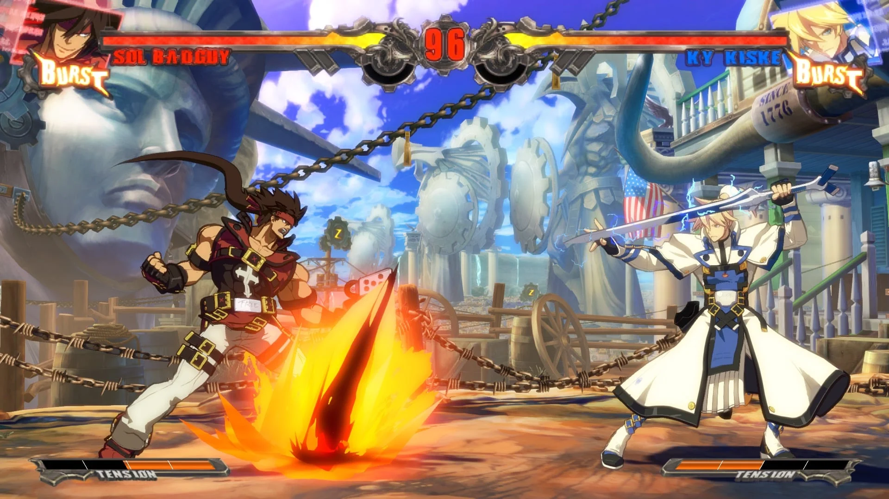
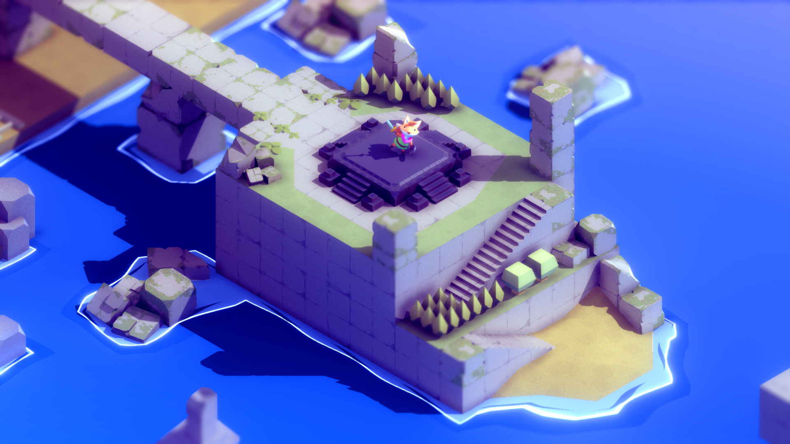
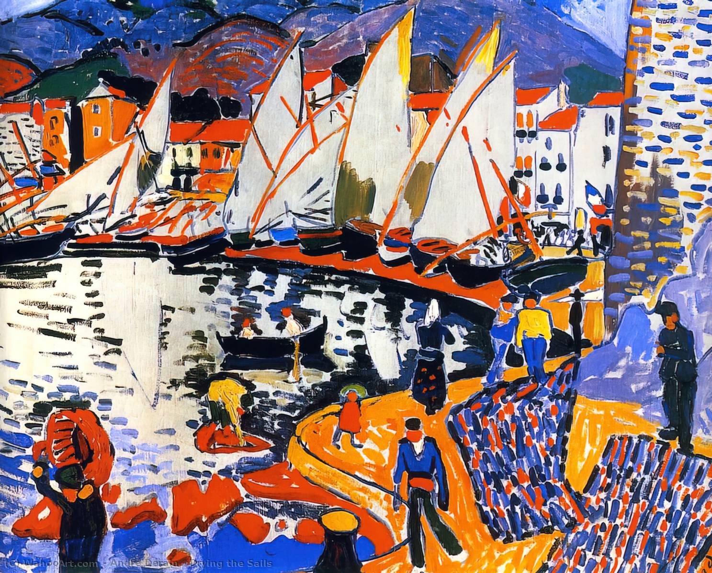
What connects them?
Internal Logic
Process driven
Why Stylise?
Unique Skills
Unique Narrative
Unique Art
Material Science
Screens are made up of pixels
(R, G, B)
Rendering engines output pixels
Follow Different Algorithms
Material Abstraction
Defines the look of a surface
Material =
(Assets, Settings, Shader Code)
Problem: Engines make assumptions about shaders
Grounded in real world
Radical Stylisation: Difficult, Lots of Effort
Worse: 3d DCC tools make same assumptions
Result: Convenient pipelines form around Physically Accurate materials
Part II: Finding Your Style
A Recipe Book
Choose Appropriate Tech
Amplify Shader Editor with
Unity Built In Render Pipeline
Godot seems promising
Unreal more opinionated
Unity URP & HDRP moving targets & much more complicated
Start Early
Stylisation will change your art pipeline
Can't be slapped on top
Get assets into engine early
Surface Shaders are Everything
More control on a per asset basis
Layering
Experiment with Extremes
Color Blending
Consider Space
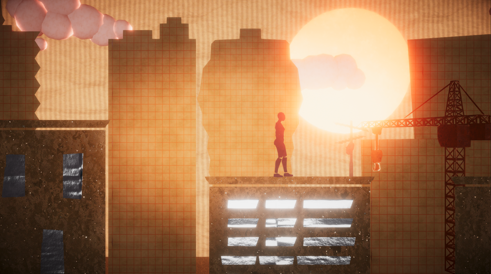
Organic Noise
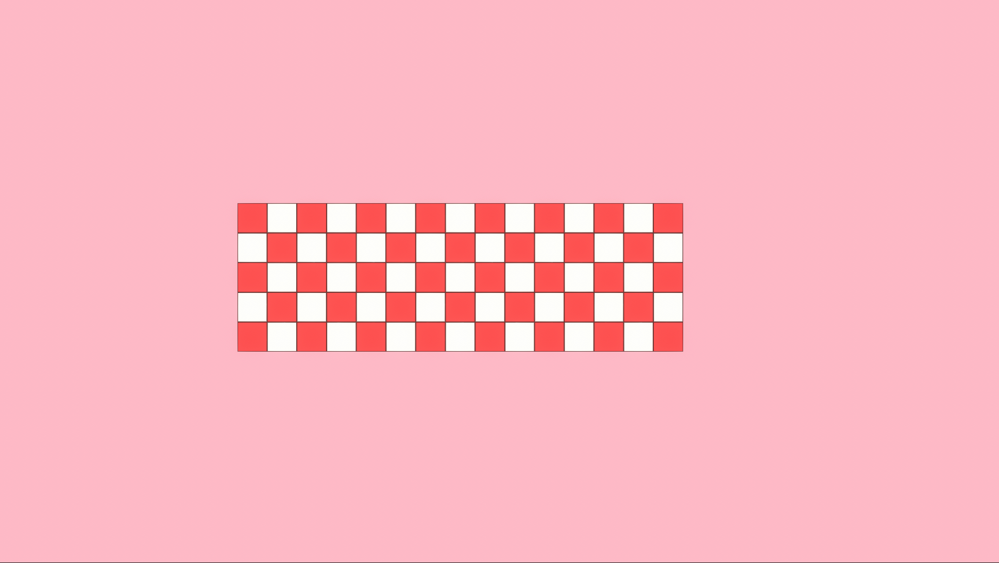
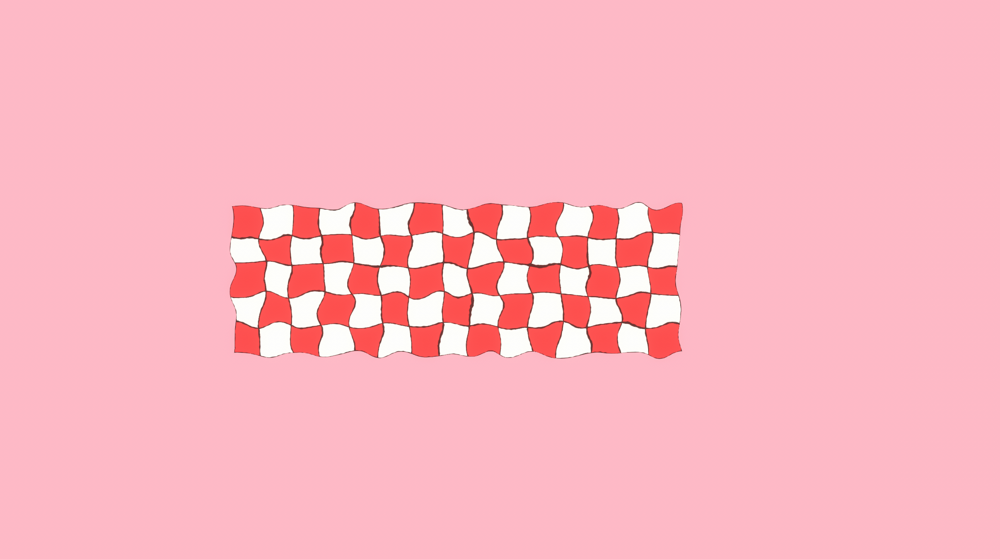
Outlines
Thresholds & Shapes
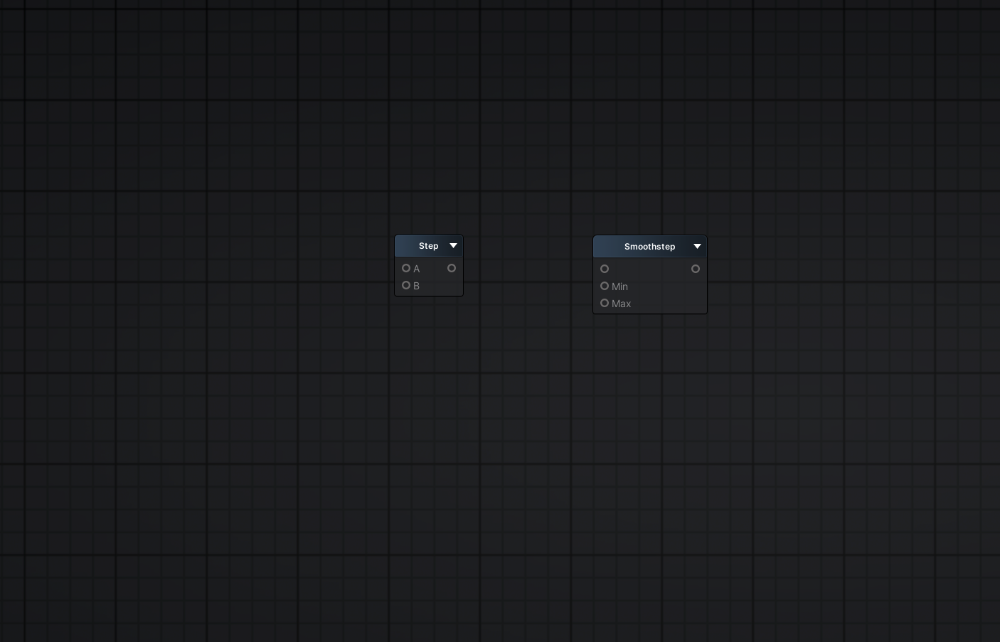
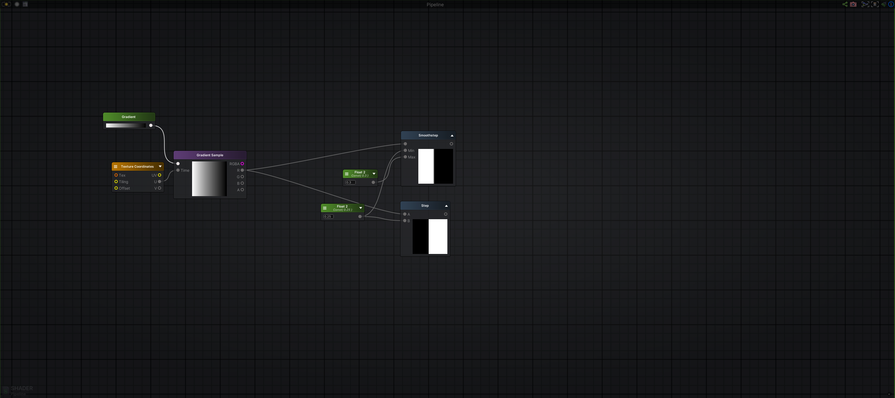
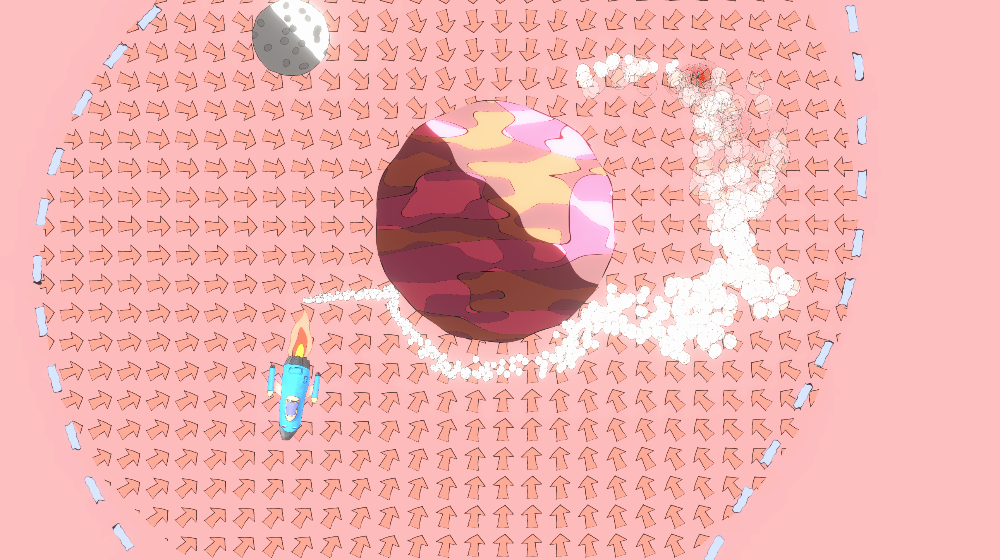
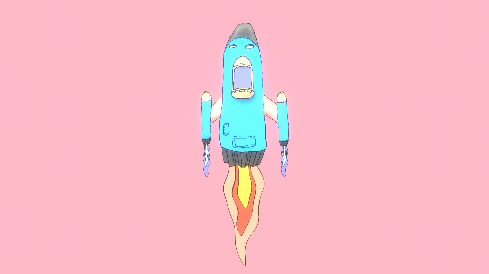
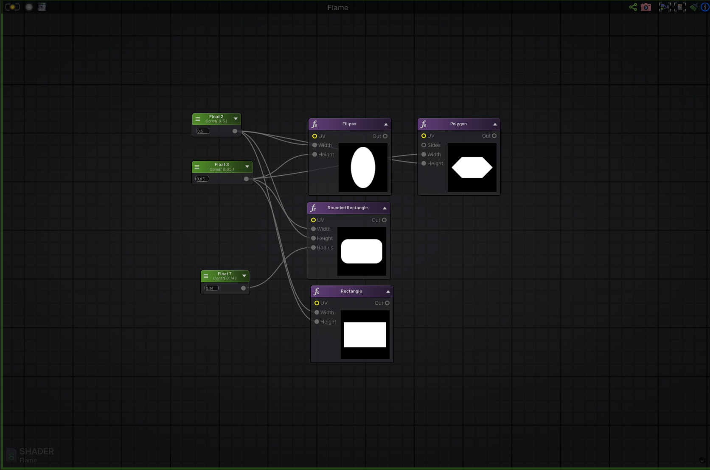
Take Control of Your Shadows
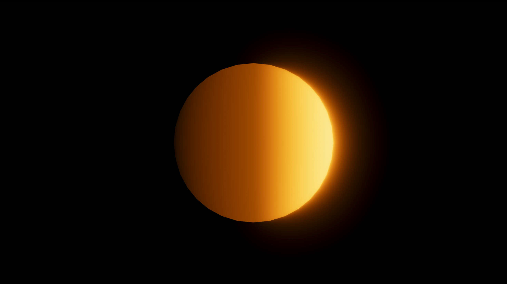
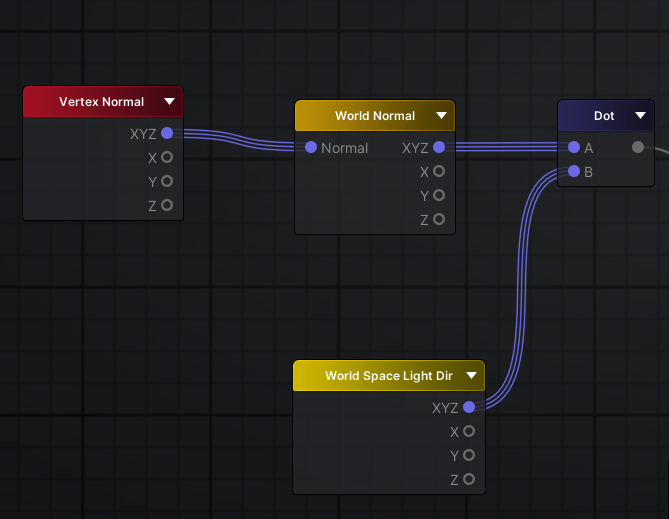
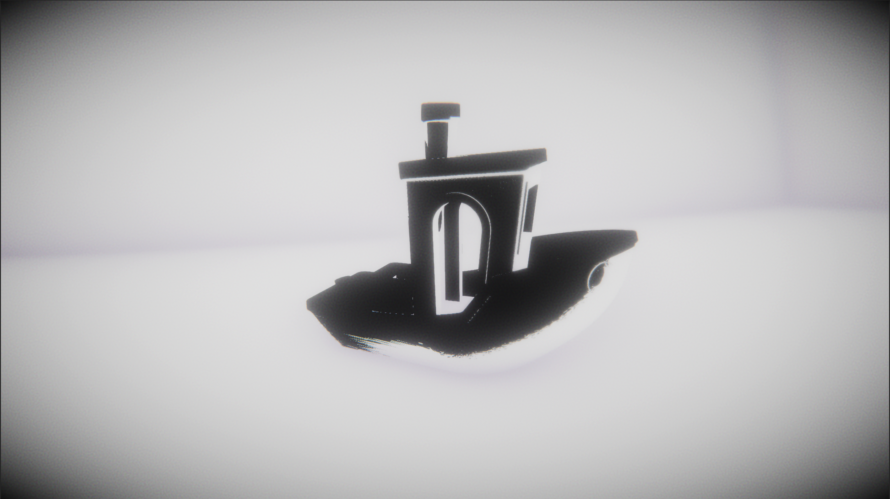
Post Processing is Everything
Especially Color Grading
Part III: Takeaways
Choose Appropriate Tech
Start Early
Surface Shaders are Everything
Layering
Experiment with Extremes
Color Blending
Consider Space
Organic Noise
Outlines
Thresholds & Shapes
Take Control of Your Shadows
Post Processing is Everything